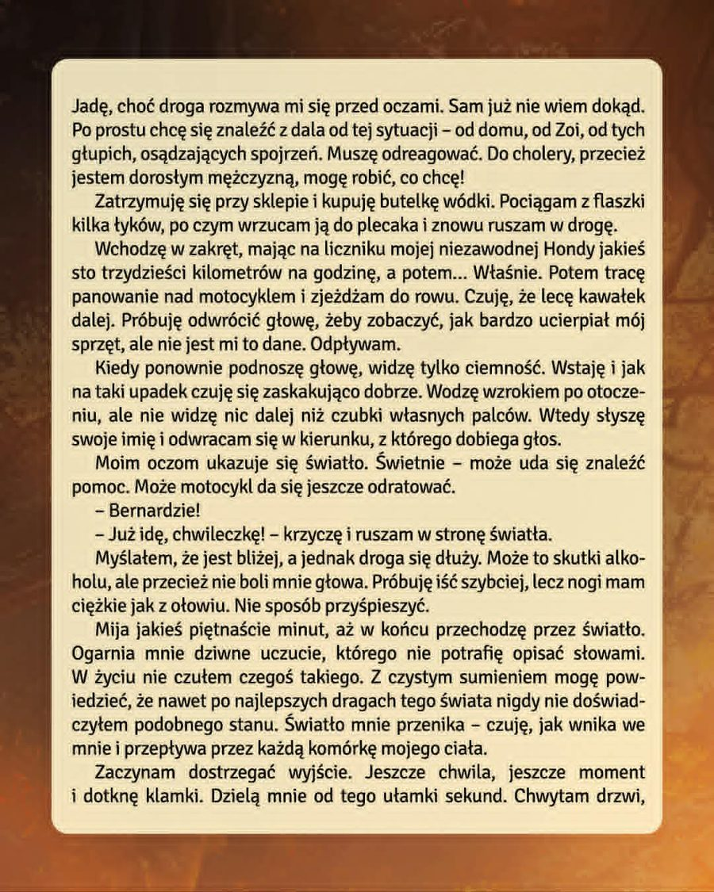
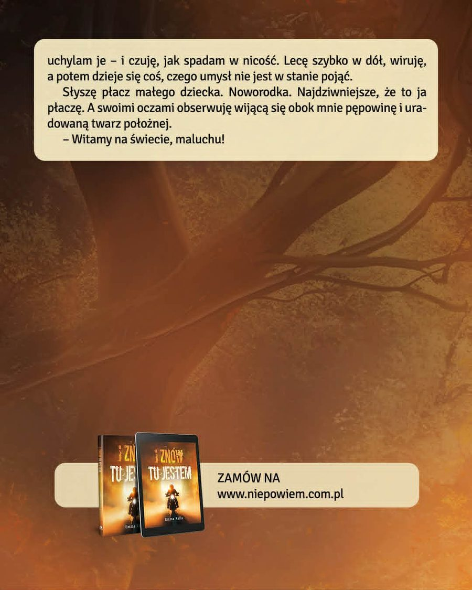

Materiały wideo
Zapowiedzi
Zapowiedź 2
Emma Kalis
Z zawodu florystka, z zamiłowania pisarka. Inspiracje czerpie z otaczającej ją codzienności, nadając jej własny charakter. „I znów tu jestem” jest jej literackim debiutem.
O książce
Co jeśli druga szansa przychodzi w sposób, którego nikt się nie spodziewa?
„I znów tu jestem” to poruszająca, introspektywna opowieść o duchowej przemianie, dojrzewaniu i poszukiwaniu sensu. To historia człowieka, który zostaje zmuszony, by spojrzeć na siebie z innej perspektywy i zmierzyć się z gniewem, błędami oraz konsekwencjami własnych wyborów.
Między codziennością a duchowym doświadczeniem rodzi się pytanie: czy los daje nam dokładnie tyle, ile jesteśmy w stanie unieść – i czy potrafimy z tej lekcji skorzystać?
„Gdyby zamiast własnego życia, mieć w rękach cudze, nadal zachowywalibyście się tak samo?”
Warto wiedzieć
Pytania o książkę
W jakim klimacie utrzymana jest powieść Emmy Kalis?
Książka ta jest kameralną i głęboko introspektywną opowieścią o charakterze psychologicznym. Autorka kładzie duży nacisk na warstwę emocjonalną oraz duchową przemianę głównego bohatera w obliczu życiowych trudności. Czytelnik znajdzie tu refleksję nad błędami z przeszłości oraz procesem dojrzewania do ważnych zmian. To lektura wymagająca skupienia, która skłania do zastanowienia się nad własnymi wyborami i ich konsekwencjami.
Dla kogo historia w „I znów tu jestem” będzie najbardziej wartościowa?
Książka „I znów tu jestem” to idealny wybór dla osób poszukujących w literaturze motywu drugiej szansy i odkupienia. Opowieść ta rezonuje z czytelnikami, którzy cenią historie o konfrontacji z własną historią i poszukiwaniu sensu w bolesnych doświadczeniach. Dzięki perspektywie duchowej przemiany pozycja ta aktywnie wspiera proces wewnętrznej autorefleksji. Jest to lektura niosąca nadzieję na zrozumienie trudnych lekcji, jakie stawia przed nami życie.
Jaką problematykę podejmuje książka w kontekście rozwoju osobistego?
Głównym motywem utworu jest konfrontacja człowieka z konsekwencjami własnego gniewu oraz nieprzemyślanych decyzji. Narracja prowadzi przez proces mierzenia się z odpowiedzialnością za swoje czyny w kontekście codziennych zmagań. Autorka analizuje, czy człowiek jest w stanie udźwignąć ciężar doświadczeń i wyciągnąć z nich konstruktywne wnioski na przyszłość. Taka tematyka sprawia, że książka staje się lustrem dla emocji, z którymi wielu odbiorców boryka się na co dzień.
Czy fabuła skupia się na akcji czy na przeżyciach wewnętrznych?
Narracja koncentruje się przede wszystkim na dynamicznych procesach zachodzących wewnątrz bohatera, a nie na gwałtownych zwrotach akcji. Wydarzenia zewnętrzne służą tu jako impuls do pogłębionej analizy psychologicznej oraz rozważań egzystencjalnych. Czytelnik śledzi ewolucję postaw i zmianę perspektywy patrzenia na otaczający świat, co buduje napięcie o charakterze emocjonalnym. To podejście sprawia, że każda wewnętrzna decyzja bohatera ma dla czytelnika bardzo wysoką wagę.
Komu ta książka może nie przypaść do gustu?
Lektura ta może okazać się niewłaściwym wyborem dla osób szukających wyłącznie lekkiej rozrywki lub szybkiego tempa fabularnego. Ze względu na swój analityczny charakter i skupienie na sferze duchowej, wymaga ona od odbiorcy gotowości do wejścia w poważniejszy ton rozważań. Czytelnicy preferujący literaturę czysto przygodową lub sensacyjną mogą uznać, że ciężar gatunkowy tej powieści rozmija się z ich aktualnymi potrzebami. Jest to propozycja skierowana do odbiorców otwartych na spokój oraz dłuższą refleksję nad tekstem.
Recenzja
„Historia została napisana z taką dynamiką i stylem, że po prostu nie dało się jej odłożyć!”Przeczytaj pełną recenzję na Instagramie
Podziękowania od autorki
Myślę, że to odpowiedni moment, aby podziękować wszystkim, którzy przyczynili się do wydania tej książki.
Serdeczne podziękowania kieruję do Wydawnictwa Nie Powiem za zaufanie i danie mi szansy na spełnienie tego marzenia. Dziękuję również wszystkim osobom zaangażowanym w pracę nad tekstem, redakcji, korekcie oraz twórcom okładki. Jestem niezwykle wdzięczna za tę owocną współpracę, profesjonalizm i wsparcie na każdym etapie powstawania książki.
Szczególne podziękowania pragnę skierować do mojego męża. Bez Ciebie ta historia najprawdopodobniej nigdy nie opuściłaby szuflady. Dziękuję, że byłeś przy mnie od pierwszego zdania aż po ostatnią napisaną stronę, nieustannie wspierając mnie i motywując. Twoja obecność, cierpliwość i wsparcie były dla mnie bezcenne.
Przeczytaj fragment
Prolog
Jadę, choć droga rozmywa mi się przed oczami. Sam nie wiem dokąd. Chcę być po prostu z dala od tej sytuacji, od domu, od Zoi, od tych głupich osądzających spojrzeń. Muszę odreagować. Do cholery, przecież jestem dorosłym mężczyzną, mogę robić co chcę!
Zatrzymuję się w sklepie i kupuję butelkę wódki. Pociągam z flaszki kilka łyków i wrzucam ją do plecaka, znowu ruszając w drogę.
Czytaj cały prolog
Wchodzę w zakręt, mając na liczniku mojej niezawodnej Hondy jakieś 130 km/h, a później… Właśnie. A później tracę panowanie nad moim motocyklem i zjeżdżam do rowu. Wiem, że lecę kawałek dalej i próbuję odwrócić się do tyłu, żeby zobaczyć, jak bardzo ucierpiał mój sprzęt, ale nie jest mi to dane. Odpływam…
Kiedy podnoszę ponownie głowę widzę tylko ciemność. Wstaję i stwierdzam, że jak na taki upadek wyjątkowo dobrze się czuję. Rozglądam się wokół, ale nie jestem w stanie dostrzec nic dalej niż palce moich stóp. W tym momencie słyszę swoje imię i odwracam się w kierunku, z którego dochodzi.
Moim oczom ukazuje się światło. Super, może uda się poszukać pomocy. Możliwe, że motocykl będzie do odratowania.
— Bernardzie!
— Już idę, chwileczkę! — krzyczę i ruszam w stronę światła.
Myślałem, że jest bliżej, a jednak droga mi się dłuży. Może to skutki wypitego alkoholu, ale przecież nie boli mnie głowa. Próbuję iść szybciej, ale moje nogi są ciężkie jak z ołowiu. Nie jest możliwe, abym przyspieszył. Mija około piętnastu minut, aż w końcu przechodzę przez światło.
Ogarnia mnie dziwne uczucie, którego nie jestem w stanie opisać słowami. W całym moim życiu nie czułem czegoś takiego. Z czystym sumieniem mogę powiedzieć, że nawet po najlepszych dragach tego świata nigdy nie poczułem się tak jak w tym momencie. Światło mnie przenika, czuję się, jakby wnikało teraz we mnie i przechodziło przez każdą komórkę mojego ciała.
Zaczynam dostrzegać wyjście, jeszcze chwila i dotknę klamki, dzielą mnie od tego tylko ułamki sekund. Chwytam drzwi, uchylam je i czuję jak spadam w nicość. Lecę szybko w dół, wiruję, a później dzieje się coś, co ciężko pojąć. Słyszę płacz małego dziecka, noworodka. Najdziwniejsze w tym jest to, że to ja płaczę. A swoimi oczami obserwuję wijącą się obok mnie pępowinę i uradowaną minę położnej.
— Witamy na świecie, maluchu!
Zobacz prolog w wersji graficznej


Dostępna w sprzedaży
Zamów książkę
Czytelnicy
Opinie czytelników
„Historia została napisana z taką dynamiką i stylem, że po prostu nie dało się jej odłożyć!”
„Książkę przeczytałam jednym tchem. Od pierwszych stron bardzo mnie wciągnęła i trudno było ją odłożyć. To historia, która potrafi zaciekawić, wzbudzić emocje i sprawić, że chce się czytać dalej.”
Kolejne opinie pojawią się po zatwierdzeniu przez administratora strony.